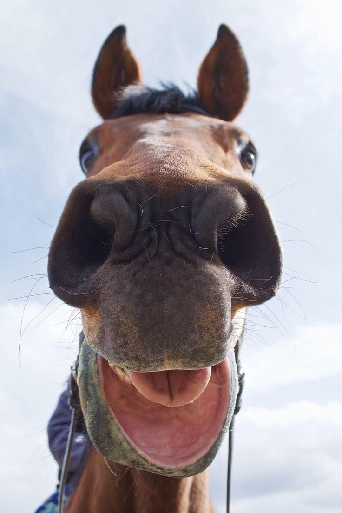

|  |
DADOS PESSOAISNome: Nico João Data de Nasc.: 11/06/2003 Endereço: Rua carlos nego Bairro: Na curva do S Cidade: Metropolis - RJ CPF: 070.122.999-09 |
Est. Civil: Casado Número: 999 CEP: 83.250-000 |
Instituição: Hungria Universal Del Pixe Del Delagado Del instituto Del instuicoen - HUPII
Data de Início: 11/02/1920
Data de Conclusão: 5/11/2024
Título da Tese: Analise: Comportamento de grilo vem desafiando a física ao pular sobre a água sem encostar a pata.
Instituição: Instituo Federal do Parana - IFPR
Data de Início: 01/01/2000
Data de Conclusão: 7/2/2005
Observação (Disciplinas): Engenharia de Software, Técnicas de Programação, Técicas Avançadas em abate de carneiro, Açoitamento, Pichação, Técnicas avançadas em mandar pix (e pedir), Arquitetura de Fazenda